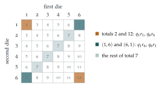

STEP I 1999, Question 12
Read the question before you go on. It is in the STEP Support Programme’s question database: step.maths.org/questions/99-s1-q12
The hook
With two fair dice, a total of \(7\) is six times as likely as a total of \(2\). Board-game designers sometimes wish it were otherwise: could you load the dice (weight them so that some faces come up more often) so that every total from \(2\) to \(12\) has the same chance, \(\frac{1}{11}\)? You can choose the twelve probabilities freely, so there seems to be plenty of room.
The answer is no, and the proof is a gem: it uses only three of the eleven totals and the inequality \(x + \frac1x \geq 2\). It is a model of how to prove that something is impossible, which is often harder, and more interesting, than showing that something can be done.
Before you start
How would you prove \(x + \frac1x \geq 2\) for \(x > 0\)? When is there equality?
Multiply by \(x > 0\): the inequality becomes \(x^2 + 1 \geq 2x\), that is \((x - 1)^2 \geq 0\), which is true. Equality holds only when \(x = 1\). (Alternatively, \(x + \frac1x - 2 = \bigl(\sqrt x - \frac{1}{\sqrt x}\bigr)^2\).) This is the AM–GM inequality in its simplest form: the average of \(x\) and \(\frac1x\) is at least their geometric mean, \(1\).
Working it through
Stage 1 The extreme totals
In how many ways can you throw a total of \(2\)? A total of \(12\)? Write their probabilities in terms of the \(q_i\) and \(r_j\).
A total of \(2\) needs \(1\) on both dice, and \(12\) needs \(6\) on both, so \(\mathrm{P}(2) = q_1r_1\) and \(\mathrm{P}(12) = q_6r_6\).
Suppose, for contradiction, that all eleven totals are equally likely, each with probability \(\frac{1}{11}\). Then \[q_1r_1 = \frac{1}{11}, \qquad q_6r_6 = \frac{1}{11}.\] In particular, all four of \(q_1\), \(r_1\), \(q_6\), \(r_6\) are positive.
Stage 2 The middle total
A total of \(7\) can be made in six ways. Which two of them involve only the faces \(1\) and \(6\)? Write their probabilities using the equations above.
The total \(7\) includes the outcomes (\(1\), \(6\)) and (\(6\), \(1\)), so \[\mathrm{P}(7) \geq q_1r_6 + q_6r_1.\] Now use the equations of Stage 1 to bring in a ratio. Since \(q_1 = \frac{1}{11r_1}\) and \(q_6 = \frac{1}{11r_6}\), \[q_1r_6 + q_6r_1 = \frac{1}{11}\Bigl(\frac{r_6}{r_1} + \frac{r_1}{r_6}\Bigr) \geq \frac{1}{11} \times 2 = \frac{2}{11},\] using \(x + \frac1x \geq 2\) with \(x = r_6/r_1 > 0\). So \(\mathrm{P}(7) \geq \frac{2}{11}\), contradicting \(\mathrm{P}(7) = \frac{1}{11}\). The totals cannot all be equally likely.■
Look at what made the proof work. Making \(2\) and \(12\) as likely as \(7\) forces the \(1\)s and \(6\)s to be fairly likely, and then the “mixed” outcomes (\(1\), \(6\)) and (\(6\), \(1\)) alone make \(7\) too likely. Figure 9.13.1 shows the cells involved.

Stage 3 Two throws of one die
If one die is thrown twice, what is the probability that the two numbers are the same, in terms of the \(q_j\)? What is it for a fair die?
The two throws agree with probability \(q_1^2 + q_2^2 + \cdots + q_6^2\). For a fair die this is \(6 \times \frac{1}{36} = \frac16\), which is already much bigger than \(\frac{1}{36}\).
Can loading make \(\sum q_j^2\) smaller than \(\frac16\)? You know that \(\sum q_j = 1\).
Write \(q_j = \frac16 + e_j\), where the deviations \(e_j\) add to zero. Then \[\sum q_j^2 = \sum\Bigl(\frac{1}{36} + \frac{e_j}{3} + e_j^2\Bigr) = \frac16 + \frac13\sum e_j + \sum e_j^2 = \frac16 + \sum e_j^2 \geq \frac16.\] So the probability of a repeat is always at least \(\frac16\), with equality only for a fair die. It certainly cannot be less than \(\frac{1}{36}\).■
Looking back
Proof by contradiction. We assumed all totals equally likely and derived an impossibility.
Use only what you need. Of the eleven equations, three were enough. Choosing the right ones was the key step.
Inequalities prove impossibility. AM–GM in part (i), and “a sum of squares is non-negative” in part (ii), ruled out whole families of possibilities at once.
What’s really going on
A proof with polynomials
Here is a completely different proof, using the generating functions of Section 9.6. Let \(Q(x) = q_1x + \cdots + q_6x^6\) and \(R(x) = r_1x + \cdots + r_6x^6\). If all totals had probability \(\frac{1}{11}\), then \[Q(x)R(x) = \frac{x^2 + x^3 + \cdots + x^{12}}{11} = \frac{x^2}{11}\bigl(1 + x + \cdots + x^{10}\bigr).\] Now \(Q(x)/x\) is a polynomial of degree \(5\) with real coefficients, and every real polynomial of odd degree has a real root (its graph goes from \(-\infty\) to \(+\infty\), or the other way). So the left side has a real non-zero root. But \(1 + x + \cdots + x^{10} = \frac{x^{11} - 1}{x - 1}\), whose roots are the \(11\)th roots of unity other than \(1\), none of which is real. Contradiction. The same argument shows that no loading of two \(n\)-sided dice can make the totals equally likely whenever \(n - 1\) is odd, that is, for \(n\) even. (For odd \(n\) the polynomial argument needs more work, but the AM–GM proof above works for every \(n \geq 2\).)
Collision probability
The quantity \(\sum q_j^2\) in part (ii), the chance that two independent draws agree, is called the collision probability of a distribution. Part (ii) shows that it is smallest for the uniform distribution. It measures how concentrated a distribution is: in ecology, \(\sum q_j^2\) is Simpson’s index of diversity, where \(q_j\) is the proportion of species \(j\) in a habitat; in economics, it is the Herfindahl index of market concentration; in cryptography, it measures how guessable a password distribution is. And it explains the remark at the end of Section 9.9: unequal birthday probabilities can only make shared birthdays more likely.
Some of the most famous results in mathematics say that something cannot be done: no fraction squares to \(2\); no ruler-and-compass construction trisects every angle; no formula in radicals solves every quintic; no algorithm decides every mathematical statement. Each changed its subject, because to prove that no method works, you must understand the whole space of methods. The loaded dice problem is a miniature: to rule out every loading, we needed an invariant property (the AM–GM inequality) that every loading must obey.
The thinking skill
To show that no choice of parameters works, assume one does, pick out the few conditions that clash, and use an inequality to show they cannot all hold.
At university, contradiction combined with inequalities is the standard way to prove that objects do not exist, in analysis, in combinatorics and in optimisation, where inequalities like AM–GM and Cauchy–Schwarz set limits on what can be achieved.
Try this next
Cauchy–Schwarz. Use the Cauchy–Schwarz inequality, \(\bigl(\sum a_jb_j\bigr)^2 \leq \sum a_j^2\sum b_j^2\), with \(a_j = q_j\) and \(b_j = 1\), to give a one-line proof of part (ii).
Two different dice. If two different loaded dice are each thrown once, can the probability that they show the same number be less than \(\frac16\)? Can it be \(0\)?
Uniform totals with other faces. Show that two dice can give equally likely totals if their faces are numbered differently: try one die numbered \(0, 1, 2, 3, 4, 5\) and the other \(0, 6, 12, 18, 24, 30\). What totals arise? Why does this not contradict the question?
Three dice. Can three loaded six-sided dice, with faces \(1\) to \(6\), make all totals from \(3\) to \(18\) equally likely? (Hint: use the totals \(3\), \(8\), \(13\) and \(18\), and AM–GM for six numbers. Why does the polynomial proof fail this time?)
Further reading
J. Michael Steele, The Cauchy–Schwarz Master Class (Cambridge University Press). A beautiful introduction to inequalities, starting from AM–GM.
Geoffrey Grimmett & Dominic Welsh, Probability: An Introduction (Oxford University Press). Generating functions and their use in proofs like the one above.
Ian Stewart, Galois Theory (CRC Press), the opening chapters. The most famous impossibility proof of all, for the quintic.